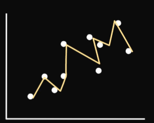

벡터 연산·회귀 형태 판단·curve_fit·OLS
<table_of_contents color="gray"/>
✅ 벡터 연산(Vectorized Operation) 개념과 np.array 사용 이유 정리
🔹 1. 벡터 연산(Vectorized Operation)이란?
👉 배열(벡터) 전체에 대해 반복문 없이 연산을 한 번에 적용하는 것
🔍 예제: 일반적인 반복문 연산 vs 벡터 연산
❌ 반복문 사용 (느림)
lst = [1, 2, 3, 4, 5]
squared_lst = []
for x in lst:
squared_lst.append(x ** 2)
print(squared_lst) # [1, 4, 9, 16, 25]
- 각 원소를 처리하려면
for문을 사용해야 함 - Python의 기본 리스트는 벡터 연산을 지원하지 않음
- 속도가 느림 (반복문을 사용하기 때문)
✅ 벡터 연산 사용 (빠름)
import numpy as np
arr = np.array([1, 2, 3, 4, 5])
squared_arr = arr ** 2 # 벡터 연산 적용
print(squared_arr) # [1 4 9 16 25]
arr ** 2만으로 모든 원소에 연산이 적용됨!- 반복문 없이 한 번에 처리 (속도 빠름!)
- C 언어 기반으로 최적화되어 빠르게 동작
🔹 2. np.array를 사용해야 하는 이유
✅ 1. 벡터 연산을 지원하여 코드가 간결해짐
✅ 2. 반복문 없이 빠른 연산이 가능 (최적화된 C 기반 연산)
✅ 3. 대용량 데이터 연산이 훨씬 빠름 (리스트보다 최대 100배 이상 빠름)
✅ 4. 머신러닝, 데이터 분석, 그래프 그리기 등에서 필수적
🔍 속도 비교 (리스트 vs NumPy 벡터 연산)
import numpy as np
import time
lst = list(range(1, 1000001)) # 1부터 100만까지 리스트
arr = np.array(lst) # 리스트를 NumPy 배열로 변환
# 리스트 연산 (반복문 사용)
start = time.time()
squared_lst = [x ** 2 for x in lst]
print("리스트 연산 시간:", time.time() - start)
# 넘파이 벡터 연산
start = time.time()
squared_arr = arr ** 2
print("넘파이 연산 시간:", time.time() - start)
✅ 실행 결과 예시
리스트 연산 시간: 0.08초
넘파이 연산 시간: 0.002초
👉 NumPy 벡터 연산이 리스트보다 40배 이상 빠름! 🚀
🔹 3. np.array를 사용해야 하는 주요 사례
✅ 1. curve_fit 같은 최적화 함수 사용
from scipy.optimize import curve_fit
import numpy as np
# 데이터
x_data = np.array([1, 2, 3, 4, 5, 6])
y_data = np.array([2, 4, 7, 11, 17, 25])
# 모델 함수
def func(x, a, b, c):
return a * x ** 2 + b * x + c # 벡터 연산 가능!
# 최적화
opt, _ = curve_fit(func, x_data, y_data)
print(opt) # a, b, c 값 출력
✔️ curve_fit() 함수는 x_data가 np.array여야 최적화 연산을 빠르게 수행할 수 있음.
✅ 2. 그래프 그리기 (matplotlib)
import numpy as np
import matplotlib.pyplot as plt
x = np.linspace(0, 10, 100) # 0~10까지 100개의 점 생성 (벡터 연산)
y = np.sin(x) # 벡터 연산 적용
plt.plot(x, y)
plt.show()
✔️ x를 리스트로 하면 np.sin(x)가 적용되지 않음.
✔️ np.array를 사용해야 벡터 연산을 적용할 수 있음.
✅ 3. 행렬 연산 (선형대수)
import numpy as np
A = np.array([[1, 2], [3, 4]])
B = np.array([[5, 6], [7, 8]])
C = A @ B # 행렬 곱셈 (벡터 연산)
print(C) # [[19 22] [43 50]]
✔️ 리스트로는 행렬 연산을 쉽게 할 수 없음!
✔️ NumPy는 자동으로 최적화된 벡터 연산을 수행함.
🔹 4. np.array를 사용해야 하는 정리
값을 예측할때 해당 값이 선형회귀인지 다항(2차) 회귀인지 어떻게알아?
✅ 최종 결론
💡 벡터 연산이란?
👉 배열 전체에 대해 반복문 없이 연산을 한 번에 수행하는 것!
💡 np.array를 써야 하는 이유?
✅ 벡터 연산을 지원하여 빠르고 간결한 코드 작성 가능
✅ for문 없이 반복 연산을 최적화
✅ 머신러닝, 데이터 분석, 최적화, 그래프, 선형대수 등에 필수적
🚀 Python에서 빠른 수학적 계산이 필요하다면 np.array를 반드시 사용하자! 🚀
어떤 모델이 적절한지 판단하려면 데이터를 분석하고 적합한 패턴을 찾는 과정이 필요해. 다음과 같은 방법을 활용할 수 있어.
1. 시각화를 통해 패턴 확인하기
가장 직관적인 방법은 산점도(Scatter Plot)를 그려 데이터의 분포를 확인하는 거야.
- 선형적인 관계 (직선 형태) → 선형 회귀(Linear Regression)
- 곡선 형태 (U자형 또는 ∩자형) → 2차 회귀(Polynomial Regression)
예시 (Python, Matplotlib 사용)
import numpy as np
import matplotlib.pyplot as plt
# 샘플 데이터 생성
x = np.linspace(-10, 10, 100)
y_linear = 2*x + 5 # 선형 관계
y_quadratic = x**2 - 3*x + 2 # 2차 함수 관계
# 그래프 그리기
plt.figure(figsize=(10,4))
plt.subplot(1,2,1)
plt.scatter(x, y_linear, label="Linear", color="blue")
plt.plot(x, y_linear, color="red")
plt.title("Linear Relationship")
plt.subplot(1,2,2)
plt.scatter(x, y_quadratic, label="Quadratic", color="green")
plt.plot(x, y_quadratic, color="red")
plt.title("Quadratic Relationship")
plt.show()
이런 식으로 데이터가 직선으로 정렬되면 선형 회귀, 곡선 형태면 2차 회귀를 고려하는 게 좋아.
2. 상관계수(피어슨 상관계수) 확인하기
선형 관계를 확인할 때 피어슨 상관계수 (Pearson Correlation Coefficient, r)를 계산하면 좋아.
- rr 값이 ±1에 가까울수록 선형 관계가 강함
- rr 값이 0이면 선형 관계가 거의 없음 (비선형적일 가능성 있음)
예시 (Python, SciPy 사용)
from scipy.stats import pearsonr
x = np.array([1, 2, 3, 4, 5])
y_linear = np.array([2, 4, 6, 8, 10])
y_quadratic = np.array([1, 4, 9, 16, 25])
# 선형 데이터와의 상관계수
corr_linear, _ = pearsonr(x, y_linear)
print(f"Linear correlation: {corr_linear}")
# 2차 데이터와의 상관계수
corr_quadratic, _ = pearsonr(x, y_quadratic)
print(f"Quadratic correlation: {corr_quadratic}")
- rr 값이 높다면 선형 회귀 사용 가능
- rr 값이 낮거나 0에 가까우면 비선형 가능성 높음 → 다항 회귀 시도
3. 회귀 모델을 각각 적용하여 비교하기
실제 데이터를 가지고 선형 회귀와 2차 회귀를 적용한 후 성능을 비교할 수도 있어.
① 선형 회귀 모델 학습
from sklearn.linear_model import LinearRegression
# 선형 회귀 모델 학습
x_reshaped = x.reshape(-1, 1)
linear_model = LinearRegression()
linear_model.fit(x_reshaped, y_linear)
# R^2 점수 확인
r2_linear = linear_model.score(x_reshaped, y_linear)
print(f"Linear Regression R^2 Score: {r2_linear}")
② 다항(2차) 회귀 모델 학습
from sklearn.preprocessing import PolynomialFeatures
from sklearn.pipeline import make_pipeline
from sklearn.linear_model import LinearRegression
# 2차 다항 회귀 모델 학습
poly_model = make_pipeline(PolynomialFeatures(2), LinearRegression())
poly_model.fit(x_reshaped, y_quadratic)
# R^2 점수 확인
r2_poly = poly_model.score(x_reshaped, y_quadratic)
print(f"Polynomial Regression R^2 Score: {r2_poly}")
- R2R\^2 값이 높을수록 해당 모델이 데이터를 더 잘 설명
- 선형 모델과 다항 모델 중 값이 더 높은 쪽을 선택하면 돼
R2R\^2
4. 잔차(Residuals) 분석
잔차(Residuals)란 실제 값과 예측 값의 차이를 의미해. 잔차를 시각화하면 패턴을 확인할 수 있어.
- 선형 회귀가 적합하면 잔차가 랜덤하게 분포함
- 비선형 데이터에 선형 회귀를 적용하면 잔차에 패턴이 보임
잔차 플롯 (Residual Plot)
import seaborn as sns
# 예측값 계산
y_pred = linear_model.predict(x_reshaped)
residuals = y_linear - y_pred
# 잔차 플롯 그리기
sns.residplot(x=x, y=residuals, lowess=True, line_kws={'color': 'red'})
plt.axhline(y=0, color='black', linestyle='--')
plt.title("Residual Plot")
plt.show()
- 잔차가 무작위로 분포하면 → 선형 회귀 적합
- 잔차가 특정 패턴을 그리면 → 비선형 모델 고려
결론
- 데이터를 시각화해서 패턴을 확인하자.
- 피어슨 상관계수를 이용해 선형성을 측정하자.
- 선형 회귀와 다항 회귀 모델을 적용 후 비교해보자.
- 잔차 분석을 통해 추가 검토하자.
이 방법으로 선형 모델과 다항 모델 중 어느 쪽이 데이터에 더 적절한지 비교할 수 있다.
다항 회귀 정리
from scipy.optimize import curve_fit
import matplotlib.pyplot as plt
import pandas as pd
df = pd.read_table('income.txt')
# 빈행 제거
df = df.dropna()
print(df)
plt.scatter(df['age'], df['income'])
# ax+bx^2+c를 구하는 것
# curve_fit(함수,x,y)
def 함수(x, a, b, c):
return (a * x ** 2)+(b * x) + c
opt, cov = curve_fit(함수, df['age'], df['income'])
a1, b1, c1 = opt # 위의 함수에 최적화된 a,b,c를 구해줌
print(opt) # [-8.42672128 73.24484048 -7.00774851]: a,b,c -> 73x -8x^2 -7
import numpy as np
i = np.array([1, 2, 3, 4, 5, 6]) # np.array
plt.plot(i, 함수(i, a1, b1, c1))
plt.show()
📌 curve_fit()과 2차 함수 (ax2+bx+cax\^2 + bx + c) 최적화 과정 정리
1️⃣ opt, a, b, c 는 무엇인가?
opt, cov = curve_fit(함수, df['age'], df['income'])
a1, b1, c1 = opt
✅ curve_fit()은 데이터를 분석해서 a, b, c의 최적값을 찾아줌.
✅ opt는 curve_fit()이 계산한 최적의 [a, b, c] 값이 들어 있는 배열.
✅ a1, b1, c1 = opt 를 사용하면 각각의 a, b, c 값을 변수로 저장 가능.
✅ 즉, 이 a, b, c 값을 이용해서 데이터에 가장 잘 맞는 곡선을 만들 수 있음!
2️⃣ cov (공분산 행렬, covariance matrix)는 무엇인가?
✅ cov는 curve_fit()이 계산한 a, b, c 값이 얼마나 신뢰할 수 있는지(오차의 크기) 를 나타내는 공분산 행렬.
✅ 오차가 크면 모델이 불안정할 수 있음.
✅ 하지만 대부분의 경우, 실제 예측값을 만드는 데는 opt만 사용하면 충분하므로 cov는 따로 사용하지 않아도 됨.
3️⃣ 데이터가 언덕 모양(∩)이면 왜 ax2+bx+cax\^2 + bx + c 를 적용할 수 있을까?
✅ 그래프가 증가하다가 감소하는 패턴이면 2차 함수로 충분히 표현 가능!
✅ 2차 함수 ax2+bx+cax\^2 + bx + c 는 꼭 U자(∪) 모양이 아니고, 위로 볼록한 언덕(∩) 형태도 만들 수 있음.
✅ 핵심은 a 값이 음수냐, 양수냐에 따라 포물선의 방향이 결정된다는 것!
- a > 0 (양수) → U자형 (∪)
- a < 0 (음수) → 언덕형 (∩)
✅ 따라서 데이터가 언덕 형태라면 curve_fit()이 a 값을 음수로 조정해서 언덕 모양을 자동으로 맞춰줌.
4️⃣ ax^2 + bx + c 와 ax + bx^2 + c 차이? (curve_fit()이 알아서 처리함!)
✅ 두 식은 사실 같은 2차 함수인데, 변수 순서만 다르게 표현한 것일 뿐.
✅ curve_fit()은 우리가 함수에서 a, b, c를 어떤 식으로 배치하든, 자동으로 최적의 값을 찾아서 적용함.
✅ 즉, 수학적으로 같은 형태라면 curve_fit()이 알아서 최적의 a, b, c 값을 조정하므로, 크게 신경 쓰지 않아도 됨.
🎯 최종 결론
✔ opt는 최적의 a, b, c 값을 담은 배열이고, cov는 신뢰도(오차) 정보.
✔ 그래프가 언덕 모양이면 ax^2 + bx + c를 사용할 수 있음.
✔ a가 음수이면 언덕(∩), a가 양수이면 U자(∪) 형태가 됨.
✔ curve_fit()이 알아서 최적의 a, b, c 값을 찾기 때문에 함수 형태(변수 순서)가 달라도 문제없음! 🚀
알겠습니다! 시각화 부분을 제외한 최종 정리입니다:
OLS(Ordinary Least Squares, 최소제곱법) 회귀 분석
from scipy.optimize import curve_fit
import matplotlib.pyplot as plt
import pandas as pd
df = pd.read_table('income.txt')
# 빈행 제거
df = df.dropna()
print(df)
plt.scatter(df['age'], df['income'])
# ax+bx^2+c를 구하는 것
# curve_fit(함수,x,y)
def 함수(x, a, b, c):
return (a * x ** 2) + (b * x) + c
opt, cov = curve_fit(함수, df['age'], df['income'])
a1, b1, c1 = opt # 위의 함수에 최적화된 a,b,c를 구해줌
print(opt) # [-8.42672128 73.24484048 -7.00774851]: a,b,c -> 73x -8x^2 -7
import numpy as np
i = np.array([1, 2, 3, 4, 5, 6]) # np.array
plt.plot(i, 함수(i, a1, b1, c1))
plt.show()
import statsmodels.api as sm
x = np.column_stack([df['age'] ** 2,df['age']])
model = sm.OLS(df['income'],x ).fit()
print(model.summary())
# overfitting에 대해서 공부하자
OLS Regression Results
=======================================================================================
Dep. Variable: income R-squared (uncentered): 0.994
Model: OLS Adj. R-squared (uncentered): 0.994
Method: Least Squares F-statistic: 6671.
Date: Thu, 13 Feb 2025 Prob (F-statistic): 5.15e-87
Time: 20:58:01 Log-Likelihood: -299.21
No. Observations: 79 AIC: 602.4
Df Residuals: 77 BIC: 607.2
Df Model: 2
Covariance Type: nonrobust
==============================================================================
coef std err t P>|t| [0.025 0.975]
------------------------------------------------------------------------------
x1 -7.9379 0.358 -22.175 0.000 -8.651 -7.225
x2 69.4323 1.523 45.590 0.000 66.400 72.465
==============================================================================
Omnibus: 2.077 Durbin-Watson: 1.196
Prob(Omnibus): 0.354 Jarque-Bera (JB): 1.695
Skew: -0.205 Prob(JB): 0.428
Kurtosis: 2.411 Cond. No. 21.2
==============================================================================
✅ 1. sm.OLS(df['income'], x).fit()의 의미
OLS(Ordinary Least Squares, 최소제곱법) 회귀 분석을 수행하는 코드다.
이때, OLS(y, X)는 반드시 y(종속변수), X(독립변수) 순으로 입력해야 한다.
model = sm.OLS(df['income'], x).fit()
df['income']→ 우리가 예측하려는 값 (종속변수 y).x→age와age²을 포함한 독립변수 X..fit()→ 모델을 학습시킴.model.summary()→ 학습된 모델의 통계 정보를 출력.
✅ 2. model.summary()가 하는 일
print(model.summary())
이 코드를 실행하면 회귀 분석 결과가 출력된다. 주요 정보는 다음과 같다:
- R-squared (결정계수) → 모델이 데이터를 얼마나 잘 설명하는지 나타냄 (
1에 가까울수록 좋음). - coefficients (회귀 계수) → 각 독립변수의 기여도.
- p-value → 해당 변수가 유의미한지 판단 (
0.05이하일 때 신뢰 가능). - F-statistic → 전체 모델의 유의성 검정.
💡 이 결과를 통해 우리가 만든 모델이 얼마나 좋은지 평가 가능하다.
✅ 3. x = np.column_stack([df['age'] ** 2, df['age']])는 무엇인가?
이 코드가 하는 일은 나이(age)와 나이의 제곱(age²)을 포함한 2차원 배열을 만드는 것이다.
x = np.column_stack([df['age'] ** 2, df['age']])
df['age'] ** 2→ 나이의 제곱값을 계산.df['age']→ 원래 나이 값 포함.np.column_stack([...])→ 두 개의 배열을 세로 방향으로 결합하여 2차원 배열을 생성.
📌 예제 (나이 데이터가 [1, 2, 3, 4]일 때)
np.column_stack([
[1, 4, 9, 16], # age²
[1, 2, 3, 4] # age
])
결과:
[[ 1 1]
[ 4 2]
[ 9 3]
[16 4]]
이렇게 만든 x를 OLS 모델에 넣으면 곡선(포물선) 형태의 회귀 모델을 학습할 수 있다.
✅ 4. 왜 2차항을 추가해야 할까?
일반적인 선형 회귀는 직선 형태만 학습할 수 있다.
하지만 소득과 나이의 관계는 곡선(포물선) 형태일 가능성이 크다.
선형 회귀 (y = a * age + b)
- 직선으로 예측 → 나이가 증가할수록 소득이 일정하게 증가
2차 회귀 (y = a * age² + b * age + c)
- 곡선으로 예측 → 어느 정도 나이가 올라가면 소득이 증가하다가 감소 가능
💡 따라서 x = np.column_stack([df['age'] ** 2, df['age']])를 사용하면 곡선 형태의 패턴을 학습할 수 있다.
✅ 5. 최종 코드 정리
import numpy as np
import pandas as pd
import statsmodels.api as sm
# 데이터 로드 및 전처리
file_path = "data/income.txt" # 공개 위키용 예시 경로
df = pd.read_table(file_path)
# 빈 행 제거
df = df.dropna()
# 독립 변수 (x) 생성: age의 제곱과 age 추가
x = np.column_stack([df['age'] ** 2, df['age']])
x = sm.add_constant(x) # 절편 추가
# 종속 변수 (y)
y = df['income']
# OLS 회귀 분석
model = sm.OLS(y, x).fit()
# 결과 출력
print(model.summary())
✅ 6. 최종 정리
OLS(y, x)는 반드시y(예측 대상),x(설명 변수) 순으로 입력해야 한다.model.summary()를 통해 모델의 성능을 확인할 수 있다.np.column_stack([df['age'] ** 2, df['age']])을 사용하여 2차 함수(곡선) 형태의 회귀 분석을 수행할 수 있다.- 단순 선형 회귀는 직선, 2차 회귀는 곡선(포물선)을 학습할 수 있다.
np.column_stack()으로 설명 변수를 설계 행렬로 묶고, 그 행렬을 OLS에 전달하는 흐름을 연결해 확인한다.
overfitting

이 그림은 overfitting을 잘 보여주는 예시입니다. 데이터 포인트들은 하얀색 점으로 표시되어 있고, 그 점들을 연결하는 선은 너무 많이 꺾여있어요.
이처럼 모델이 데이터를 너무 잘 맞추려 하면, 훈련 데이터에서는 좋은 성과를 낼 수 있지만, 새로운 데이터에서는 제대로 예측하지 못하게 돼요. 왜냐하면, 모델이 훈련 데이터의 세부적인 노이즈까지 학습해서, 일반적인 패턴을 잡지 못하기 때문이에요.
올바른 모델은 훈련 데이터에 너무 세밀하게 맞추지 않고, 더 단순하고 부드러운 선으로 데이터의 전체적인 경향을 잘 파악해요.